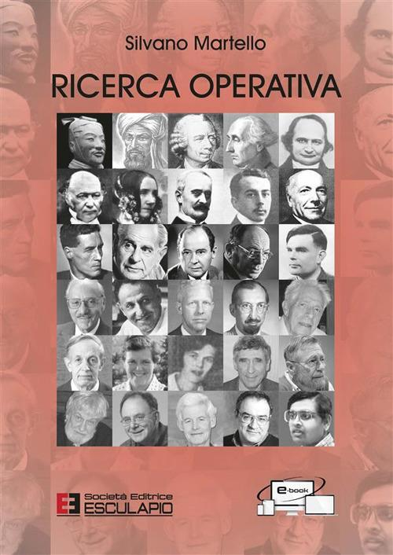
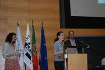

|  | |
| Dates of the next exam sessions (all courses) | |
| Operations Research M (Code 72935, Master's Degree Course) | |
| Operations Research M (Code 34878, OLD Master's Degree Course) | |
| Network Optimization M | |
| Didactic Tools (Applets, freeware) | |
| PhD courses | |
| Written test entry (all courses) | |
| Fundamentals of Operations Research L-A (Undergraduate course) | |
| Operations Research LS (Graduate course) | |
| Operations Research L-A (Old undergraduate course) | |
| Operations Research VO (Old 5-years course) | |
| Upgrade from Operations Research LS to Operations Research M | |
| For announcements see the official home page | |
| On the use of laptops during class | |
| Announcement: The tutor Dr Claudia D'Ambrosio has been awarded the EURO Doctoral Dissertation Award 2010  | |